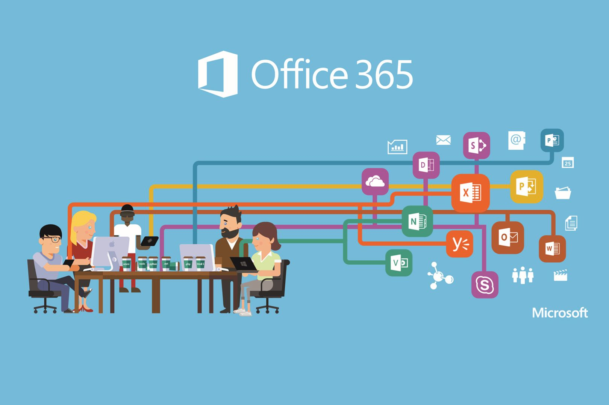

Compétences
Réseaux
Je peux effectuer un adressage IP, créer un service FTP sous Windows ainsi qu'analyser les trames grâce a l'outil Wireshark.
Python
Gestion de code Python, création de code et l'utilisation de base de données.
Java

Gestion et création de code Java, utilisation du framework WindowsBuilder sous Swing. Utilisation de base de données via les application crées.
Base de données
Création et gestion de base de données grâce nottament a l'outil DBeaver mais aussi grâce a du code PHP.
Développement Web

Création de page HTML / PHP / CSS, en lien avec les bases de données réalisées.
Office 365
Je peux utiliser les outils de Office 365 pour faire mes comptes rendu, faire des diaporama pour mes exposés ainsi que partager mes idées via le drive.